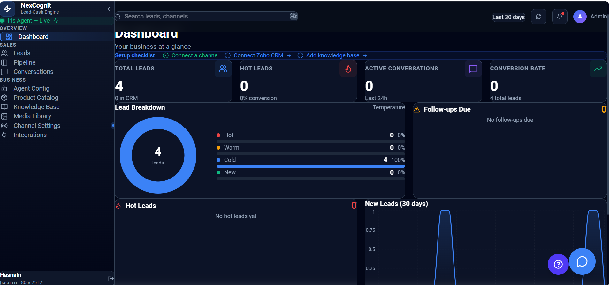

Dashboard
The Dashboard is the main overview page in NexCognit. It gives you a quick view of business activity, including leads, conversations, and follow-up work.
Dashboard overview
The Dashboard helps teams understand what is happening right now and which follow-up actions need attention. It is designed for quick review at the start of the day or during a busy sales cycle.
Dashboard sections
- Total Leads: The total number of people who have contacted your business.
- Hot Leads: Leads with high purchase intent and high sales priority.
- Active Conversations: Contacts who sent a message in the last 24 hours.
- Conversion Rate: The percentage of leads that converted.
- Lead Breakdown: A summary of leads by status, including Hot, Warm, Cold, and New.
- Follow-ups Due: Leads that need follow-up attention soon.
- New Leads chart: A visual overview of how many new leads were created over time.
- Activity Heatmap: A view of when customer conversations happen most often.
Dashboard screenshot
The following image shows a typical Dashboard view in NexCognit.

Things to know
- Use the Dashboard to spot activity trends quickly.
- Review follow-ups and active conversations regularly to keep momentum high.
- Lead status and activity patterns help your team prioritize the right opportunities.